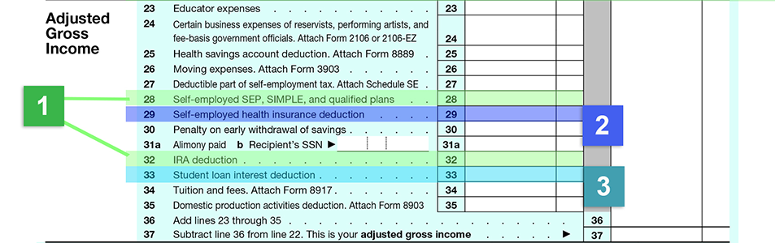

Unlike individuals in the U.S., not all deductions are created equal. Some provide much more benefit than others. The Internal Revenue Code divides deductions into two categories: those "above the line" and those "below the line." "The line" is a magic number called Adjusted Gross Income (AGI) and it appears twice on the tax return. It is the last number on the first page and the first number on the last page. Adjusted Gross Income is used throughout the return to calculate the deductibility of expenses, the deductibility of exemptions, the calculation of tax and the application of tax credits. Generally speaking, deductions "above the line" provide more benefit than those "below the line" due to the importance of the AGI number.
What are "above the line" deductions? They are the deductions that are taken to transform Gross Income into Adjusted Gross Income. The three primary deductions of importance to us are those allowed for: (1) IRA and other retirement plan contributions; (2) self-employed health insurance payments; and (3) education expenses. Click each numbered area to learn more.
